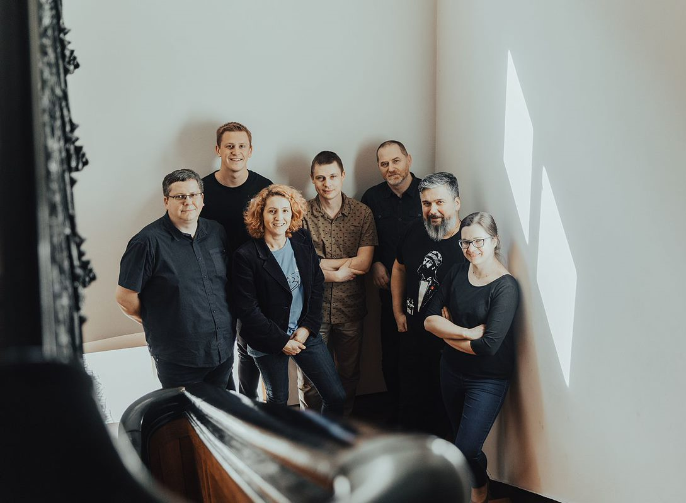

Doradcy ABEL
Doradcy zespołu ABEL są specjalistami w zakresie projektowania rozwiązań sieciowych i serwerowych
dla klientów. Ich zadaniem jest tworzenie i wdrażanie rozwiązań, które umożliwią klientom
skorzystanie z najnowszych technologii. W tym celu dokonują oni analizy wymagań klienta i wybierają
odpowiednie rozwiązania techniczne, które będą spełniały jego wymagania. Oprócz projektowania,
doradcy zajmują się również wdrażaniem nowych technologii i monitorowaniem bezpieczeństwa
instytucji i firm. Oprócz tego, doradcy zapewniają również wsparcie techniczne i konsultacje podczas
projektowania i wdrażania nowych systemów.
